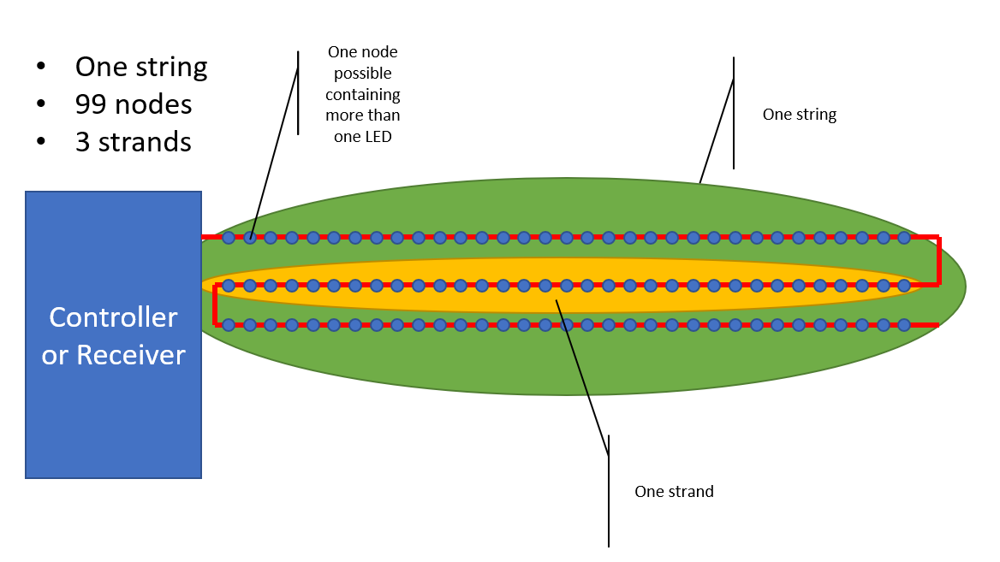

When setting model properties you will see properties relating to the number of strings, nodes per string and strands per string.
A node in most cases is a single LED/RGB pixel but in some cases nodes may have more than one LED or RGB light connected to a single chip. In this case all LEDs are controlled as one and thus this is considered a single node.
A string represents a set of nodes connected together. They start at a controller or receiver and they end connected to nothing.
On some models such as trees and matrices you may want to zig zag a single string up and down or across and back the model. In this case each zig or zag is known as a strand.
